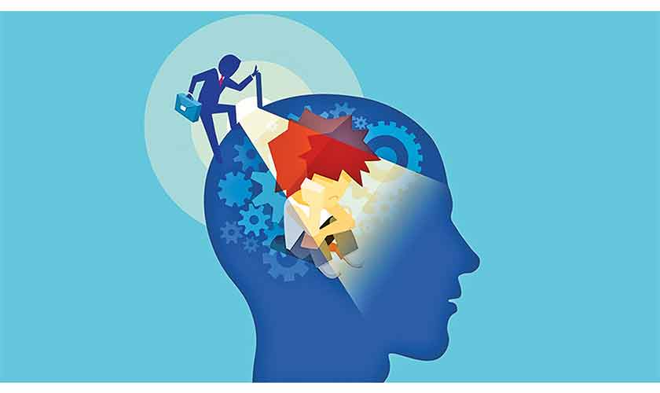
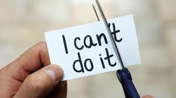

How can Teenagers Overcome these Stereotypes?
Open and Non-Judgemental Conversations
With open and non judgemental conversations, the listeners are fully able to understand where you are coming from and the point you are trying to get across. These conversations can prevent any misunderstandings and problems that may arise.

Self-awareness
Having self awareness gives us power to influence outcomes, helps us become better decision makers and gives us more self confidence. When we have self awareness we are able to understand our strengths and weaknesses which helps us to set goals for ourselves.

Confidence and Self Expression
Self expression allows us to relate to others, empathise with their experiences and build meaningful relationships. Being confident helps us feel ready for life experiences and in difficult scenarios. When we are confident we are more likely to move forward with people and opportunities.
Seeking for Help/Support
Admitting you need help and asking for it is what keeps you strong and helps you rise up to whatever challenge you are facing. It helps us to calm and comfort ourselves when we're upset, to cope with the losses, changes, fears and uncertainties in life.

Develop Resilience
We all face hardships at some point in life. But those who develop resilience can tap into their strengths and support systems. When you have resilience you harness the inner strength that helps you rebound from a setback or challenge.

How to Prevent Stereotypes in our Society
Challenging and Confronting Stereotypes
Confronting stereotypes is essential for creating an inclusive society where everyone can develop confidence in themselves. It also encourages personal growth by promoting individuals to question their own assumptions and embrace diverse perspectives. Educating others is another way to challenge stereotypes as it allows everyone to understand the impacts and what they can do about it.

Practice Self-Care
Engaging in a self-care routine has been clinically proven to reduce or eliminate anxiety and depression, reduce stress, increase happiness, improve mental health and more. It can help you adapt to changes, build strong relationships, and recover from setbacks. Some of the things that an individual can do to practice self-care includes doing activities that interest you, having a healthy lifestyle and being positive.

Looking After your Mental Health
Mental health is a big part of how we socialise and react to others around us. Having good mental health can help you develop positive and meaningful relationships with others.